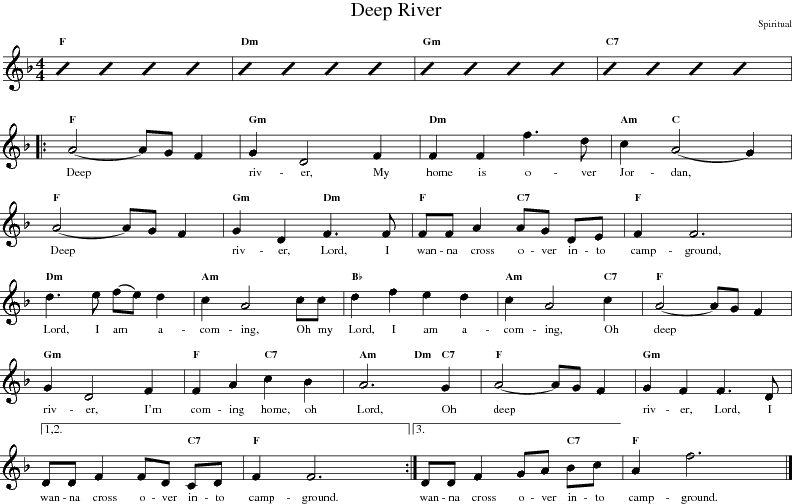

suivant: Création d'un fichier lib. monter: Tutorial précédent: Un exemple simple
Ça va bien se passer... Nous allons traiter un spiritual ancien (et lent)... et le résultat va en surprendre plus d'un ! nous aborderons au passage les répétitions, les modifications du volume, et certaines fonctions intéressantes gérant le tempo :
| Un morceau du domaine public |
|

|
Plutôt que d'afficher le code d'un seul tenant, nous y insérerons des commentaires tout le long. Vous trouverez le code brut dans le dossier egs.
D'abord une partie commentaire :
| // Deep River |
On commence le code en choisissant le clic du métronome ŕ 4 temps :
| Groove metronome2-4 |
Surprenons un peu nos auditeurs et partons avec un tempo normal. Un seul z donne 1 mesure d'introduction de 4 temps :
|
Tempo 90
z Groove FolkArticulated |
En guise d'introduction, de doux accords que nous jouons tranquillement sur 4 mesures :
|
1 F
2 Dm 3 Gm 4 C7 |
Surprise ! mettons le tempo ŕ 140, et sélectionnons le groove Swing2 :
|
Tempo 140
Groove Swing2 |
Il serait assez intéressant d'avoir simplement un changement de rythme et de tempo. Pour cela, une transition est nécessaire. Voyons... et si nous intercalions 2 temps de batterie (au lieu de 4)? Nous pourrions alors créer une mesure ŕ 2 temps... donc, ici on double le tempo et on place le tout dans une seule mesure :
|
Tempo *2
z |
Maintenant, remettons le tempo original (ŕ 140) :
| Tempo *.5 |
Puis, comme sur la partition, nous insérons un début de répétition :
| Repeat |
Réglons le volume : demandons ŕ MMA une nuance plus douce au cours des 8 mesures suivantes. Ici, nous utilisons le réglage de l'option start volume par la commande Decresc. Si nous ne le faisons pas, le volume courant de la mesure précédente sera utilisé ; et juste aprčs une répétition, ce n'est pas une bonne idée. Ici le volume diminuera progressivement, durant 8 mesures, de la nuance mf ŕ la nuance mp :
| Decresc mf mp 8 |
La suite des accords :
|
5 F
6 Gm 7 Dm 8 Am C 9 F 10 Gm / Dm 11 F / C7 12 F 13 Dm 14 Am |
Augmentation progressive du volume au cours des 4 mesures suivantes, de la nuance courante (mp) ŕ la nuance ff, et suite des accords :
|
Cresc ff 4
15 Bb 16 Am / / C7 17 F 18 Gm 19 F / C7 20 Am / Dm C7 21 F 22 Gm |
Voici les mesure de 1čre et 2čme fois. Notez le 2 ŕ la fin de la ligne ... qui commande de faire la reprise 2 fois :
|
RepeatEnding 2
23 / / / C7 24 F |
Pour les 2čme et 3čme fois, nous voulons un accompagnement plus intéressant. Le groove Swing2Plus est sélectionné pour agrémenter le morceau d'une clarinette :
| Groove Swing2Plus |
Clôture la partie répétition :
| RepeatEnd |
Pour les 2 derničres mesures du morceau, nous sélectionnons le groove Swing2End et nous ralentissons le tempo :
|
Groove Swing2End
Tempo -40 2 1 / / / C7 |
Le groove Swing2End a une jolie petite gamme jouée par le saxophone, mais uniquement sur les 3čme et 4čme mesure. Il s'agit d'une séquence de 4 mesures oů les 2 premičres sont ŕ vide pour le saxophiniste. La commande Seq 3 oblige la séquence ŕ utiliser le solo pendant cette mesure ; solo que nous assortissons d'un volume plus élevé :
|
Scale Volume ff
Seq 3 1 F Fermata -1 1 200 |
Pour en terminer avec cet exemple, nous prolongeons la derničre note, par la commande Fermata signifiant un point d'orgue.
Compilez cet exemple et jouez le fichier MIDI qui en résulte. Suivez ŕ la fois sur la partition et sur le code MMA afin de comprendre ce qui se passe.
Ce ne sont que quelques exemples oů les idées présentées ne font qu'effleurer les possibilités de MMA . En tant que développeurs, nous avons cherché ŕ vous donner assez de commandes et d'options pour vous permettre de créer une belle musique. Si ce n'était pas le cas, nous espérons que vous nous le feriez savoir.
Nous vous suggérons enfin d'éditer et d'examiner les exemples ci-dessus ... et d'en créer ŕ votre tour. Amusez-vous bien !
bob 2010-12-31